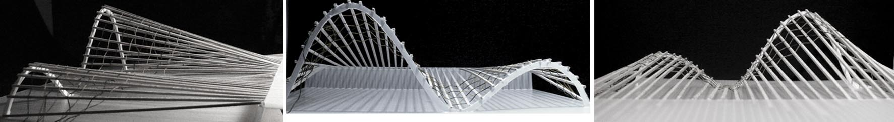
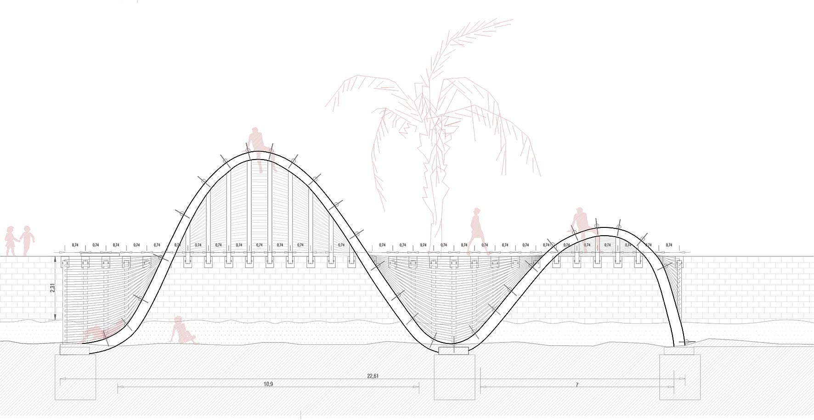
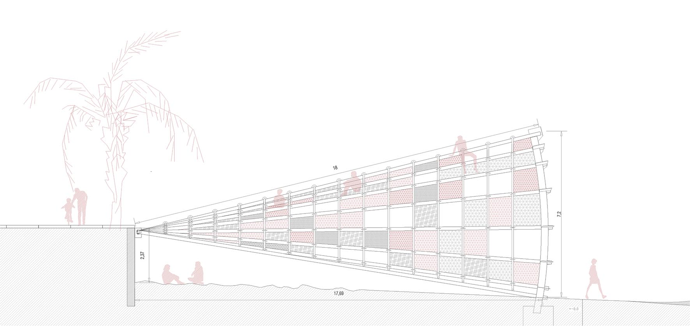
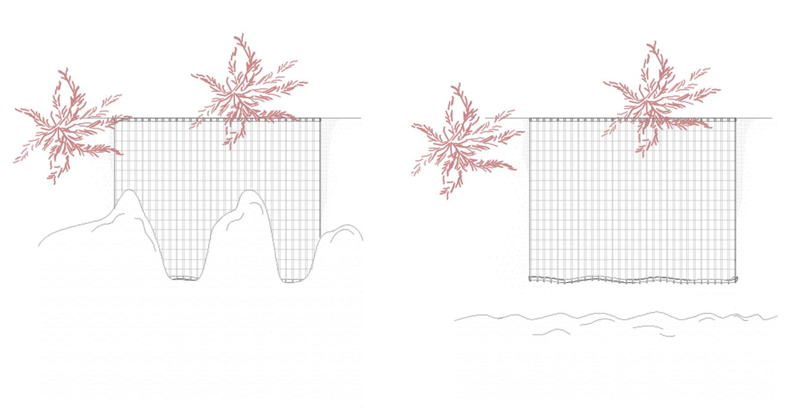
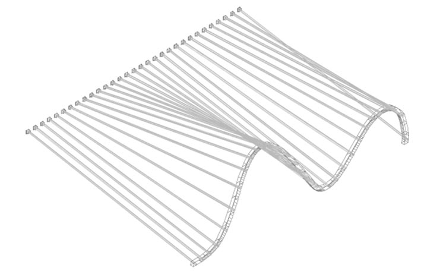
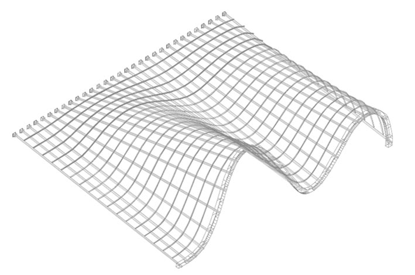

-

maqueta de desarrollo de proyecto

alzado

alzado lateral

vista en planta con marea alta/baja
Anclaje de las articulaciones al muro y de la viga principal a la cimentación.
Colocación de la estructura de segundo orden. Perfiles tubulares.
Colocación de la estructura de tercer orden, soldada a los pilares mediante pletinas.

Recubrimiento con telas naúticas.